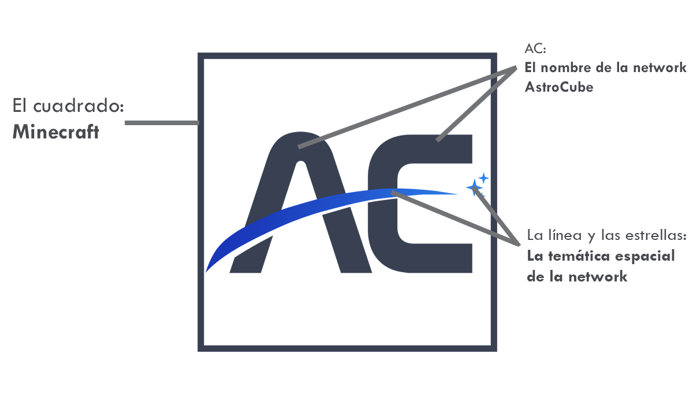

EL CUADRADO representa a la principal característica de Minecraft de las figuras cúbicas/cuadradas de los gráficos del juego.
EL CUADRADO representa a la principal característica de Minecraft de las figuras cúbicas/cuadradas de los gráficos del juego.
 LAS LETRAS "AC" significan el nombre de la network "AstroCube".
LAS LETRAS "AC" significan el nombre de la network "AstroCube".
LA LÍNEA CENTRAL Y LAS ESTRELLAS significan la temática de la network que es espacial junto a un degradado de azul a celeste.
¿Qué significan los elementos del logo?
Ejemplo en una forma simplificada.
